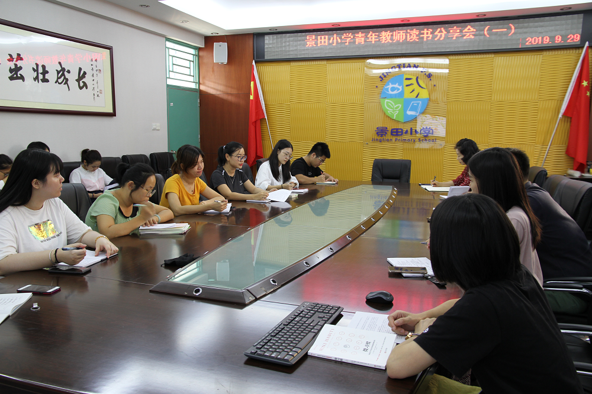
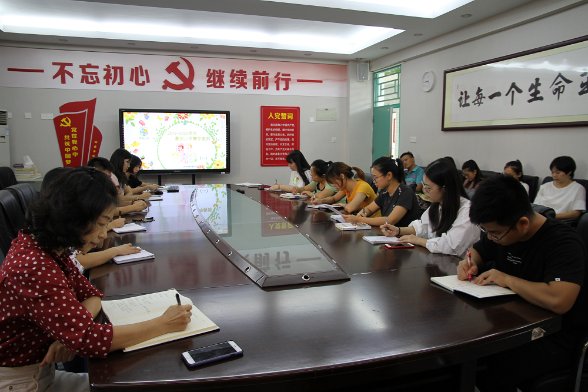
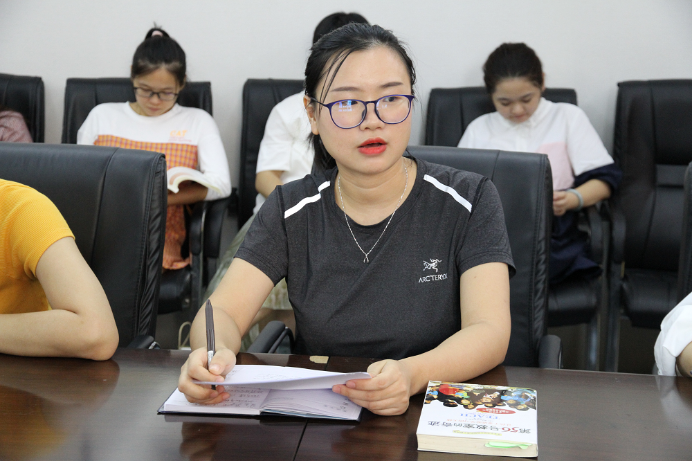
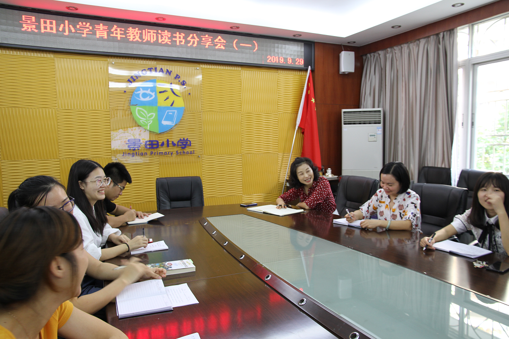
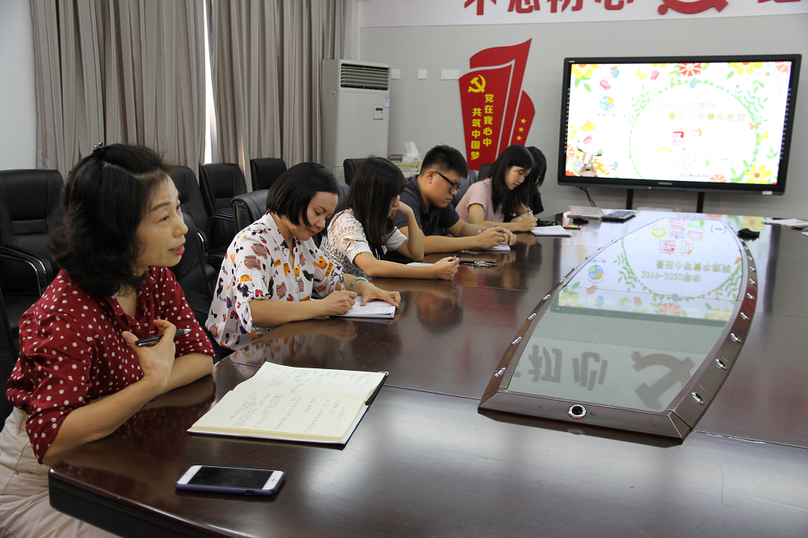

记2019-2020学年青年教师读书分享会（一）

“阅读好书，共同成长，相遇景田，读你每天。”蒲城县北关小学-蒲城县桥山中学始终关注青年教师的专业成长，培养终身阅读的好习惯，2019年9月29日举行每月一次的青年教师读书分享活动，活动现场学习氛围浓烈，教师们的收获颇丰，让读书分享会又有了新的定义。

洪琪琪老师作为第一位分享者，分享前让大家一起摸摸自己的鼻子这一充满疑惑的动作为分享埋下了伏笔，用有趣生动的动画展示作者斯蒂芬·盖斯的个人经历历程，引出《微习惯》的内涵：微量开始，从简单的不可能失败的任务开始，然后超额完成。为了更科学的解释微习惯的可行性，从生理上剖析习惯改变的两大关键人物：前额皮层和基底神经节。洪老师利用自己对书本的深刻理解将以上两大人物比喻为大象与骑象人，将难懂的生理知识形象化有趣的动画，建立6步骤的微习惯养成，总结出“微步骤+意志力→必胜组合”的培养公式。分享从书中个人成长和习惯养成的帮助，迁移至学生行为习惯，课堂教学当中实践。在座的老师都听得津津有味，理解通透，实属有趣。

黄少玲老师为我们带来了《第56号教室的奇迹》一书的感想。她从三个部分结合自己的教学生涯对这本书作了深刻的理解。从自己恩师对自己学习、校园生活，甚至自身的人生观、价值观、世界观都起了不可磨灭的影响说起，到书本上提到的身教重于言传作了自己的深刻理解，说明老师的言行品德对学生一生的作用。老师树立榜样的作用，利用孩子的向师性，引导孩子积极向上。作为教师要更好的鞭策自己成为全面发展的老师，是双管齐下的教学良药。最后通过书本去反思自己想要成为怎样的教师，该做如何的努力。

李学军主任对本次的分享用两句精辟的话语总结：“不积跬步，无以至千里”，“一千个人读《哈姆雷特》，就有一千个哈姆雷特”，不同时候读《哈姆雷特》，也有不一样的哈姆雷特，好的书值得我们一读再读，每次都会收获不一样的精彩。
陶粲明副校长讲话将本次分享拉上更高一个层次。她表示，每一次与年轻人在一起都能从书中找到乐趣，并做出精彩点评：洪老师是个内心有光芒的孩子，通过专业的多媒体展示将微习惯解释得淋漓尽致，让自己也有所启发去掌控好自己遇到的“大象”，使得在座的老师们也不再惧怕自己的短板，是值得大家学习的地方；黄老师结合自己的教学经验与书做一次深度的交流，对自己的工作有了很好的认识，并深刻理解这份职业的性质。最后陶校分享了一句话：培养终身阅读的习惯，是命运的幸运儿，会抵挡生活中的孤独，琐碎，不堪。

本次的读书分享会开启了本学期青年教师阅读分享之旅，老师们收获满满，每月一分享的读书活动将持续开展，愿读书让我们成为更好的我们。
撰稿：刘世敏
图片：罗鑫